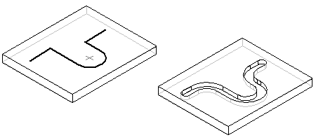

Symmetric Offset command
Use the Symmetric Offset command  draws geometry offset symmetrically from a centerline you select.
draws geometry offset symmetrically from a centerline you select.

Use the Symmetric Offset command draws geometry offset symmetrically from a centerline you select.
